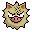
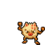
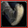
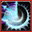
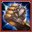
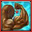
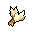
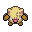
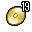

Pokédex / #057

Primeape #057
Fighting
It is always outrageously furious. If it gives chase, it will tenaciously track the target no matter how far.
Generation 1 · Kanto

Stats
| Attack | 105 | |
|---|---|---|
| Defense | 60 | |
| Sp. Atk | 60 | |
| Sp. Def | 70 |
In the wild
| Wild level | 45–55 |
|---|---|
| HP | 65 |
| Experience | 15 |
| Egg groups | Field |
Evolution
- Evolves from Mankey at level 35.
Moves
| Level | Move | Type | Category | Power | Energy | Cooldown | Effect | |
|---|---|---|---|---|---|---|---|---|
| 1 | Tackle | Normal | Physical | 15 | 15 | 1s | Tackle is one of the most common and basic moves a Pokemon learns. It deals damage with no additional effects. | |
| 5 | Scratch | Normal | Physical | 40 | 40 | 6s | Scratch inflicts damage and has no secondary effect. | |
| 10 |  | Low Kick | Fighting | Physical | 80 | 80 | 12s | Low Kick deals damage and has no secondary effect. |
| 15 | Focus Energy | Normal | Status | – | 70 | 60s | Increases Critical-Hit ratio by 50%. | |
| 20 | Fury Swipes | Normal | Physical | 18 | 45 | 9s | Fury Swipes inflicts damage, hitting 2-5 times per use. | |
| 25 | Karate Chop | Fighting | Physical | 50 | 60 | 10s | Karate Chop deals damage and has an increased critical hit ratio. | |
| 30 |  | Seismic Toss | Fighting | Physical | 80 | 80 | 12s | Seismic Toss deals damage and has no secondary effect. |
| 40 | Punishment | Dark | Physical | 60 | 100 | 20s | Punishment deals varying damage based on the opponent's stat increases. It starts at base power 60 and increases by 20 for every net stat boost of the opponent. | |
| 45 |  | Cross Chop | Fighting | Physical | 100 | 100 | 15s | Cross Chop deals damage and has an increased critical hit ratio. |
| 50 | Thrash | Normal | Physical | 40 | 115 | 12s | The user attacks for 2-3 turns and then becomes confused. | |
| 55 |  | Close Combat | Fighting | Physical | 120 | 120 | 18s | Close Combat deals damage but lowers the user's Defense and Special Defense by one stage each after attacking. |
| 60 | Double Team | Normal | Status | – | 150 | 90s | Double Team increases the user's speed into maximum, creating illusions. | |
| 65 | Reversal | Fighting | Physical | 90 | 90 | 14s | Reversal deals more damage the lower the target HP. | |
| 70 | Counter | – | Physical | – | 100 | 90s | When hit by a Physical Attack, user strikes back with 2x power. |
Field abilities
DigRock ClimbStrengthRock SmashHeadbutt
Special abilities
Vital SpiritAnger Point
Egg moves
Beat UpClose CombatCounterEncoreFocus PunchForesightMeditateNight SlashRevengeReversalSleep TalkSmelling Salts
Technical machines
Aerial AceBideBody SlamBrick BreakBulk UpCounterDefense CurlDouble EdgeDouble TeamDynamic PunchEarthquakeFire PunchFocus PunchHeadbuttHyper BeamIce PunchIron TailMega KickMega PunchMetronomeMimicMud SlapOverheatPay DayPoison JabRageRain DanceRestRock SlideRock TombSeismic TossSkull BashSoftboiledSubmissionSubstituteSwiftTake DownTauntThunderThunder PunchThunderboltToxic
Drops
| Item | Amount | Chance | |
|---|---|---|---|
| bamboo leaves | 1–3 | 87.5% | |
| bunch of sugar cane | 1–3 | 87.5% | |
 | fur | 1 | 72.9% |
| ape hair | 1 | 10.9% | |
| cookie | 1–3 | 3% | |
| onigiri | 1–3 | 3% | |
| Fist Plate | 1 | 0.1% | |
 | primeape doll | 1 | 0.1% |
| held black belt | 1 | 0.02% | |
 | TM 19 | 1 | 0.01% |